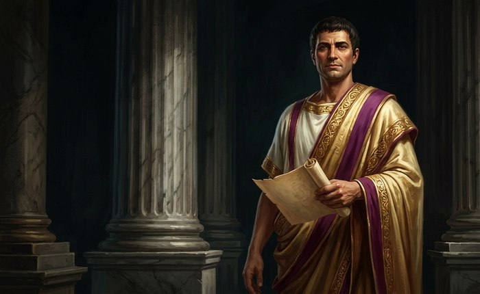
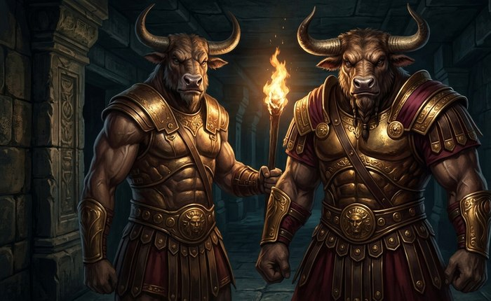
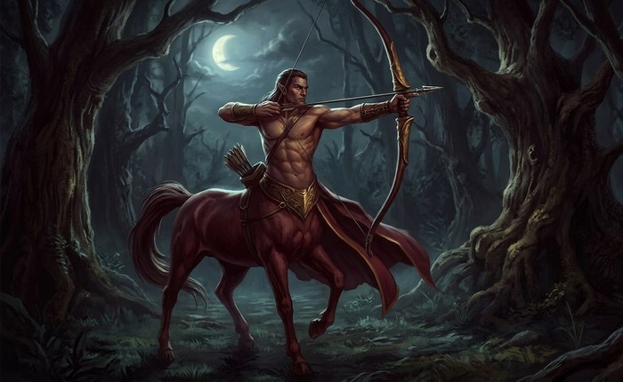
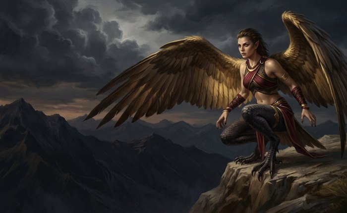
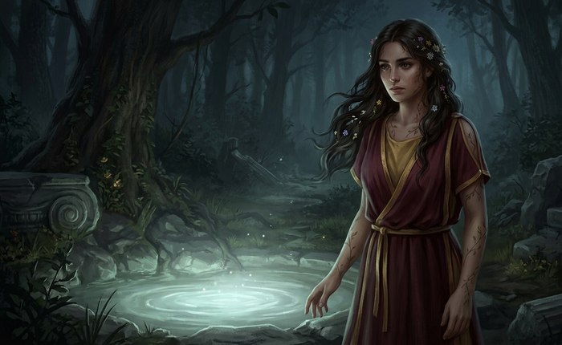
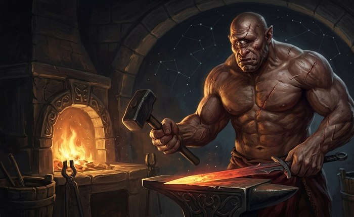

Playable Races
Brief overviews of the playable cultures and their gameplay traits. These are starting templates — roleplay can (and should) exceed mechanical labels.

Human (Roman Citizen)
Versatile and adaptable, excelling in civic life, trade, and warfare. Roman citizens navigate politics and command with ease.
Traits: Social Savvy, Adaptable
Stat Bonuses: None - perfectly balanced, fits any class equally well
Abilities: Command Presence (bonus to leadership/diplomacy), Civic Access (hold/influence positions)

Minotaur (Labyrinth Born)
Powerful warriors, descendants of bulls and humans. Fearsome in combat and adept at navigating complex terrain like mazes or fortresses.
Traits: Strength, Resilience
Stat Bonuses: +3 Virtus, +1 Vigor, +20 Max HP, -5 Max MP
Abilities: Bull Rush (knock enemies back), Labyrinth Sense (never get lost in complex terrain)

Centaur (Forest Guardian)
Half-human, half-horse, roaming the wilds as protectors of forests. Skilled archers and scouts, combining intelligence with equine speed and strength.
Traits: Strength, Agility
Stat Bonuses: +2 Virtus, +2 Agilitas, +5 Max HP, +15 Max SP
Abilities: Galloping Charge (powerful close-quarters attack), Forest Tracker (excellent movement and tracking in nature)

Harpy (Windborne Seeker)
Winged humanoids tied to storms and mountains. Skilled scouts and aerial warriors, perfect for reconnaissance and hit-and-run tactics.
Traits: Flight, Keen Senses
Stat Bonuses: +2 Agilitas, +2 Ingenium, -5 Max HP, +20 Max SP - genuinely flexible between a physical or caster path
Abilities: Aerial Assault (bonus attacks from above), Skyward Scout (traverse terrain faster, spot hidden foes)

Nymph (Descendants of the Wild)
Though their name is drawn from the immortal nature-spirits of old, playable Nymphs are mortal - descendants of a union between nymph and mortal, carrying a fading echo of that divine parent's power. Not goddesses themselves, but never quite ordinary either.
Traits: Nature Affinity, Healing
Stat Bonuses: +3 Ingenium, -5 Max HP, +20 Max MP
Abilities: Boon of the Wilds (heal allies), Elemental Ward (temporary elemental protection)

Cyclops (Titanic Brute)
Enormous one-eyed giants famed for strength and craftsmanship. Formidable in battle and expert siege engineers shaping the outcome of conflicts.
Traits: Strength, Endurance
Stat Bonuses: +3 Virtus, +2 Vigor, +30 Max HP, -10 Max MP, -5 Max SP
Abilities: Crushing Blow (massive melee damage), Forge Mastery (craft/repair weapons faster), Intimidating Presence (reduce enemy morale)